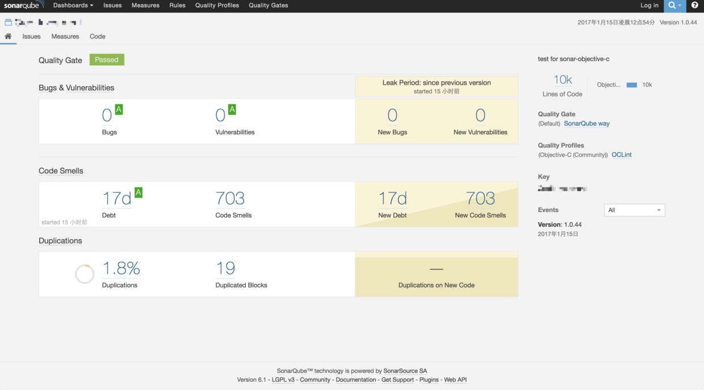
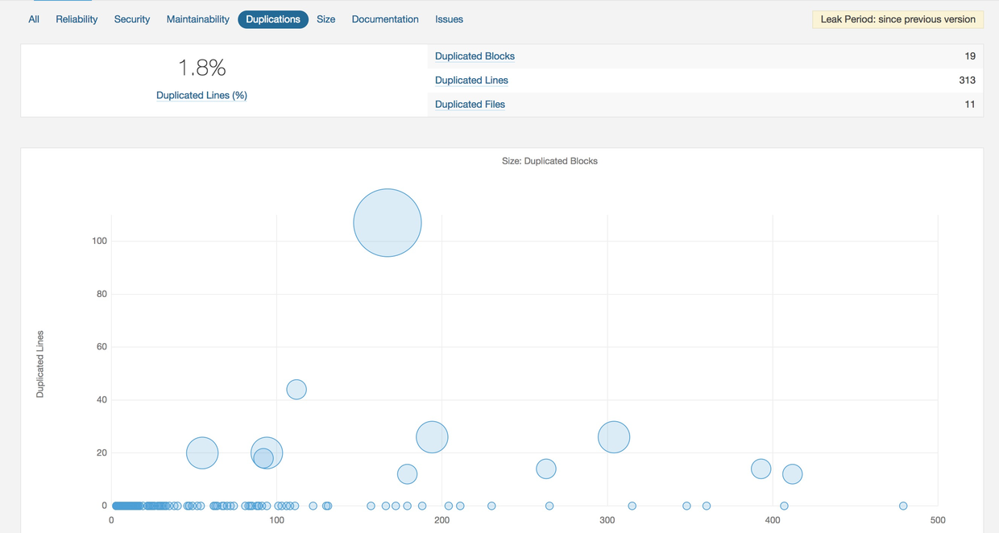
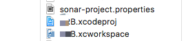
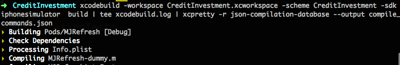
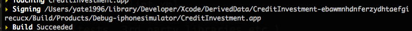
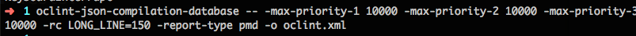
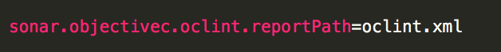
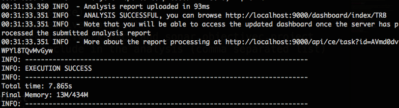

本文记录了利用Sonar工具，搭建一个实现对iOS项目进行代码质量检测的系统。
先瞄一眼成果～


1.JDK，DBMS（演示环境使用Mysql）
2.创建sonar数据库和用户
1 | mysql -u root -pCREATE DATABASE sonar CHARACTER SET utf8 COLLATE utf8_general_ci; |
3.下载sonar 演示环境使用v6.1，下载后解压到
/usr/local/sonar/
4.安装sonar-runner
下载sonar-runner：演示环境使用v2.4，下载后解压到
/usr/local/sonar-runner/
完成后配置bin环境变量PATH～
5.安装完成sonar、sonar-runner后进行数据配置
sonar配置：sonar.properties配置文件/usr/local/sonar/conf/sonar.properties
配置数据库登陆账号密码
1 | sonar.jdbc.username=sonar |
sonar-runner配置：sonar-runner.properties配置文件/usr/local/sonar-runner/conf/sonar-runner.properties。
1 | sonar.host.url=http://localhost:9000 |
5.1在/usr/local/sonar/bin/macosx-universal-64/下执行：
sudo ./sonar.sh start 启动sonar。在浏览器打开localhost:9000查看是否启动
6.sonar默认没有安装oc的插件，需要手动下载:sonar-objective-c-plugin-0.5.0-SNAPSHOT.jar 引用下载地址
放置在/usr/local/sonar/extensions/plugins/目录下。重启sonar会自动加载。1
2sudo ./sonar.sh stop
sudo ./sonar.sh start
7.使用Homebrew来安装xctool、oclint、gcovr。
1 | brew install xctool |
8.在待测试项目与*.xocdeproj同级目录下新建文本sonar-project.properties配置待测试项目信息。引用下载地址
配置结构如下：

9.在此工作目录下运行隔壁老王写的兼容xcode8的脚本：https://github.com/ChenTF/iOS-sonarShell/blob/master/run-sonar_V2.sh
PS：运行该脚本无效的可尝试参考11的思路手动运行
10.完成。打开localhost:9000查看结果，然后开始修bug吧～～附图：
11.补充：手动执行代码质量检测过程
11.1.生成compile_commands.json文件。命令：
1 | xcodebuild -workspace TRB.xcworkspace -scheme TRB -sdk iphonesimulator build | tee xcodebuild.log | xcpretty -r json-compilation-database --output compile_commands.json |


11.2生成oclint.xml。命令：
1 | oclint-json-compilation-database -- -max-priority-1 10000 -max-priority-2 10000 -max-priority-3 10000 -rc LONG_LINE=150 -report-type pmd -o oclint.xml |

11.3执行sonar-runner。
注意在sonar-project.properties配置文件中，需要配置oclint.xml文件路径。1
sonar.objectivec.oclint.reportPath=oclint.xml

执行命令：1
sonar-runner //若提示没找到命令的检查PATH的设置


11.4完成。打开localhost:9000查看结果。～～
补充：
如果需要，可下载sonar中文插件，放到/usr/local/sonar/extensions/plugins/下，重启sonar即可。
注意下载的语言包需要和sonar版本号对应，例如演示环境sonar为v6.1，故下载v1.13语言包。
对应关系请参照下载地址
参考链接：
Sonar XCode8兼容
欢迎加群讨论其它～：578874451